|
部分图片汇报北京西安2007年4月
2007年4月13日到23日我在北京停留了十天，以走亲访友和进京告状为主，什么景点都不想跑
（觉得拍摄景点糖水片真没啥意思），故宫长城天坛颐和园都没去，天天在大街上乱晃，回旅馆就大门紧闭写字或者发呆，下楼吃饭都嫌烦。23日下午续程西安，再访兵马俑并夜登华山。28日连夜飞回长沙。
两星期扫射大街拍了两千多张，大部分惨不忍睹。这个习惯要改，后期工作量太大。但我写了非常详细的日记，十天写了上万字。我越来越喜欢写字不喜欢拍照了。
这里先选一些图片，文字待后整理。字写得非常乱，很多写的拼音，我已经多年没用笔写过字了。
我5月拍摄北京景点的计划泡了汤，我爸爸4月28日晚上再次中风，整个5月我一直在医院战斗。
今天上午（2007/5/28）他终于出院了，我稍微松了一口气，等过几天找好保姆我就续程北京。

从机窗看见南中国海 环形珊瑚礁。4月13日新加坡至北京。
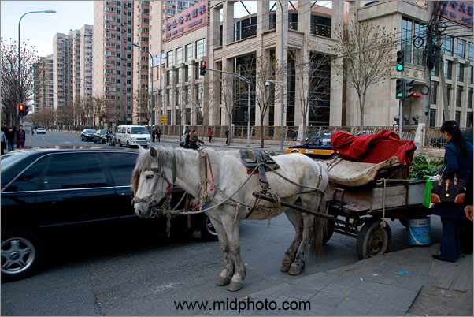
2007年4月14日北京
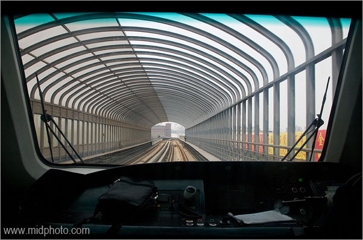
2007年4月15日北京城铁。
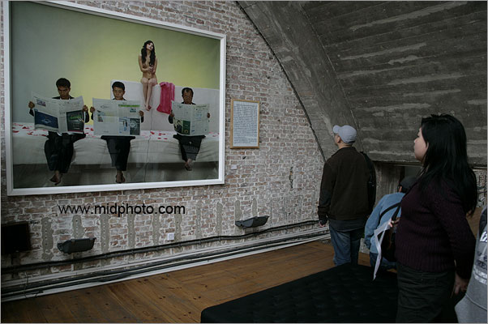
《解决方案》摄影展，北京798艺术中心，2007年4月15日
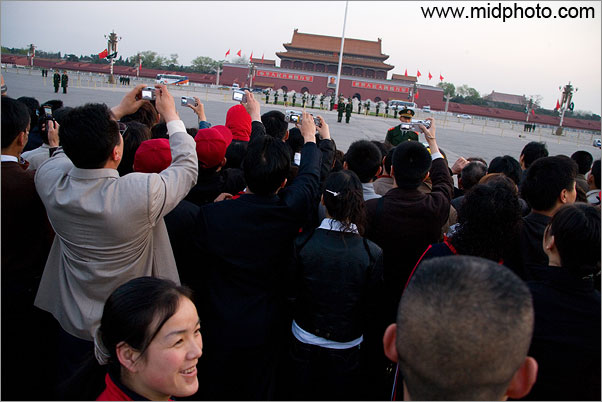
北京天安门升旗. 17 April 2007
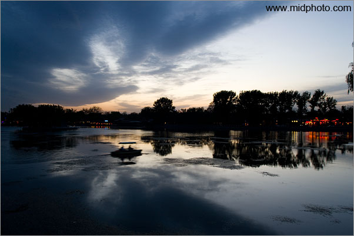
北京后海，20 April 2007
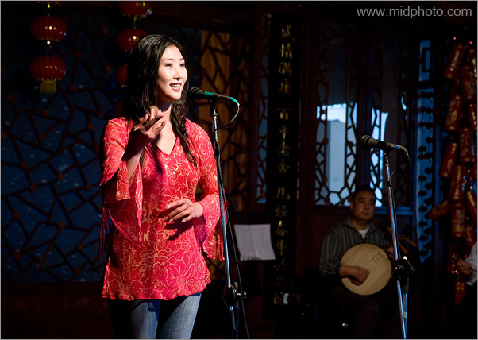
老舍茶馆京剧清唱，中央戏曲学院的美女。20 April
2007
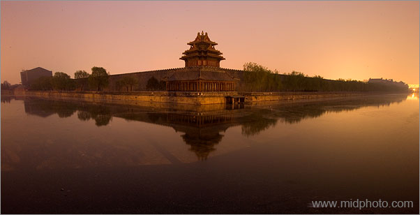
北京故宫角楼
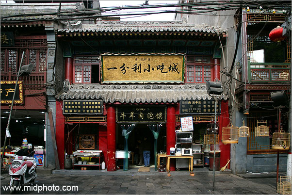
西安
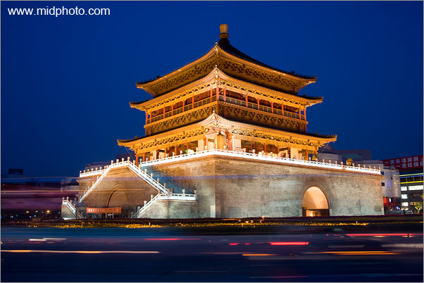
西安钟楼
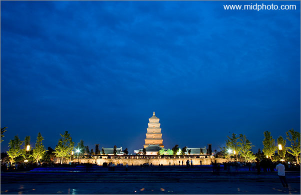
大雁塔
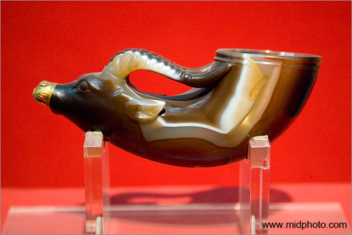
陕西省博物馆

兵马俑

兵马俑

深夜华山。2007年4月26日。
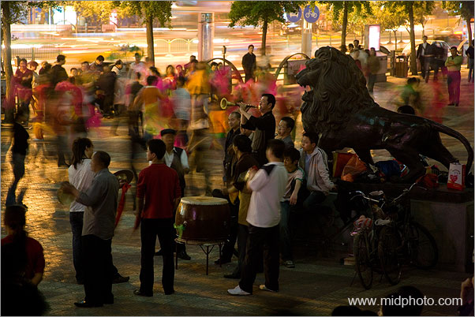
西安街头秧歌。2007年4月27日。
|